a pretrained text-to-image flow, then flow matching from scratch on mnist · fall 2026
part a · the power of flow models
pixnerd-xxl-p16-t2i · 512 × 512 · no training
00
so what is a flow model?
A flow model makes an image by starting from pure Gaussian noise and moving it, a little at a time, towards a clean image. The model never outputs the image directly. Instead, given the current (noisy) image and a time t, it predicts a velocity: which direction every pixel should move. Follow the velocity from t = 0 to t = 1 and you end up with an image.
In Part A we use PixNerd, a 512 × 512 text-to-image flow model that works directly on pixels, with Qwen3-1.7B turning the prompt into an embedding. t = 0 is pure noise and t = 1 is the clean image, and the path between them is a straight line:
Every run uses seed 180 and an Euler step size of h = 0.02. For sections 1.1 to 1.5 our own photo is a piece of aji nigiri on a stone counter.
1.1
constructing noisy training inputs
How does a flow model see an image during training? We pick a time t, draw some noise ε, and blend the two along the straight line above. We draw one ε and reuse it at every t, so the only thing that changes between the three images is how much of the sushi is mixed in.
original · t = 0.25 · t = 0.5 · t = 0.75 · same noise
At t = 0.25 we can only just make out the edges of the counter and a dark lump where the sushi is. At t = 0.75 the nori on top and the colors of the fish are already back.
1.2
classical denoising
Before using the model, let’s see how far a plain Gaussian blur gets us. First we divide by t, which brings the image back to its original brightness:
xt / t = x1 + ((1 − t) / t) · ε
The catch is that dividing scales the noise up too: its standard deviation becomes 3 at t = 0.25, 1 at t = 0.5 and 1/3 at t = 0.75. We tried σ ∈ {1, 2, 4, 8, 16} and kept whichever came out closest (lowest MSE) to the clean image, which gave σ = 16, 4 and 2. This makes sense: the noisier the input, the harder we have to blur.
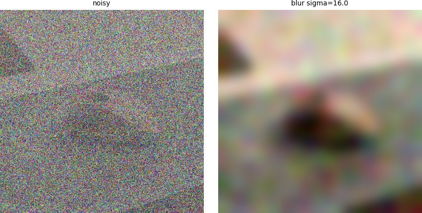
t = 0.25 · noisy · blurred, σ = 16
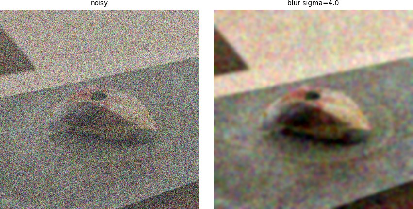
t = 0.5 · noisy · blurred, σ = 4
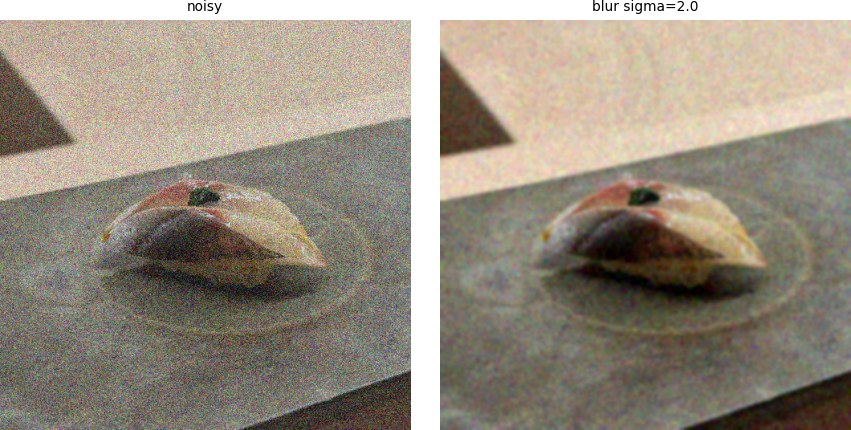
t = 0.75 · noisy · blurred, σ = 2
At t = 0.25, σ = 16 removes the noise but also the sushi, and all that’s left is a dark smudge on a pinkish counter. Even at t = 0.75 the result is soft and the colored speckle is still visible. A Gaussian blur has no idea what sushi looks like, so all it can do is trade noise for detail.
1.3
one-step denoising
Now for the model. Since the velocity is the slope of a straight line, we can follow it from t all the way to 1 in a single jump of length 1 − t:
The prompt c is “a high quality photo”. Note that we add the velocity; we don’t subtract it like you would with predicted noise.
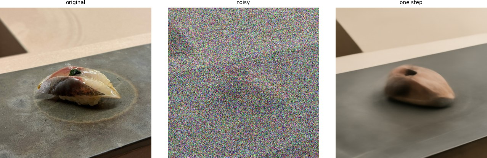
t = 0.25 · original · noisy · one step
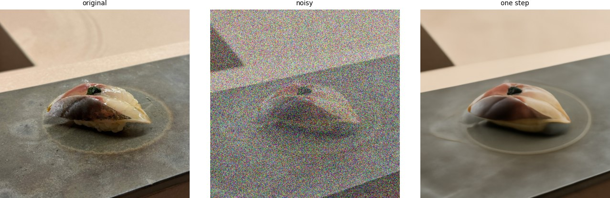
t = 0.5 · original · noisy · one step
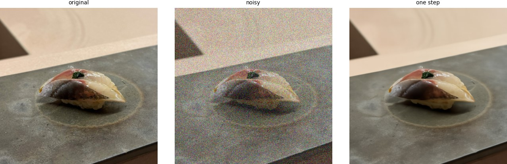
t = 0.75 · original · noisy · one step
This is already much better than blurring. At t = 0.25 the model gets the scene right (a wall, a gray counter, something sitting on it) but the sushi turns into a smooth brown lump. At t = 0.5 the shape, the nori and the pink and white of the fish come back, although the sushi looks suspiciously abstract and shiny. At t = 0.75 the estimate is almost the original, just smoother. It now kind of looks like a sushi model piece used for display.
Why smooth? One step gives us the model’s average guess of the clean image given what it can see. Wherever it isn’t sure (the stone texture, the pattern on the fish skin), all the plausible answers get averaged together, and an average of many slightly different textures is a blur.
1.4
visualizing velocity
In 1.3, we added the update (1 − t) v̂ to xt. The update that would have recovered our photo exactly is (1 − t) vgt = x1 − xt, which we can compute since we kept the noise from 1.1. The error map is the RMS over RGB of the difference, per pixel:
Both updates look like a faded copy of the scene. That’s because x1 − xt = (1 − t)(x1 − ε): the image minus the noise, scaled down by 1 − t, so the updates fade towards gray as t grows. The predicted update is the ground truth with the fine detail smoothed out.
There is actually a neat way to read the error map. The predicted update is x̂1 − xt and the true one is x1 − xt, so their difference is x̂1 − x1: the heat map is exactly the per-pixel error of the one-step estimate from 1.3. It lights up on the outline of the sushi, the pattern on the fish skin, the faint ring around the sushi and the edges of the counter, while the flat wall and counter top stay dark. The error also shrinks as t grows, since the model can see more of the image and there is less left to fix.
1.5
iterative denoising with euler sampling
Instead of one big jump, we can take many small steps of size h and ask the model for a fresh velocity after every step: xt+h = xt + h · v(xt, t). From t = 0.5 with h = 0.02 that is 25 steps. When 1 − t isn’t a multiple of h, the last step is shortened so we land exactly on t = 1. With a constant velocity field we checked that starting at t = 0, 0.5 and 0.93 takes 50, 25 and 4 steps respectively and ends exactly 1 − t away from the start.
def euler_sample(x_start, t_start, step_size, velocity):
x, t = x_start, t_start
states = [(t, x)]
n = math.ceil(round((1 - t_start) / step_size, 6))
for i in range(1, n + 1):
t_next = 1 if i == n else t_start + i * step_size
x = x + (t_next - t) * velocity(x, t)
t = t_next
if i % 5 == 0 or i == n:
states.append((t, x))
return x, states
(The round is there because (1 − 0.93) / 0.02 comes out as 3.4999… in floating point.)
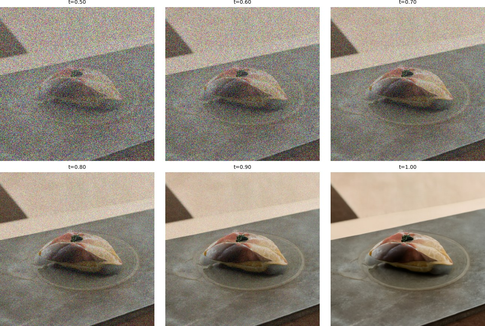
euler from t = 0.5 · every fifth step
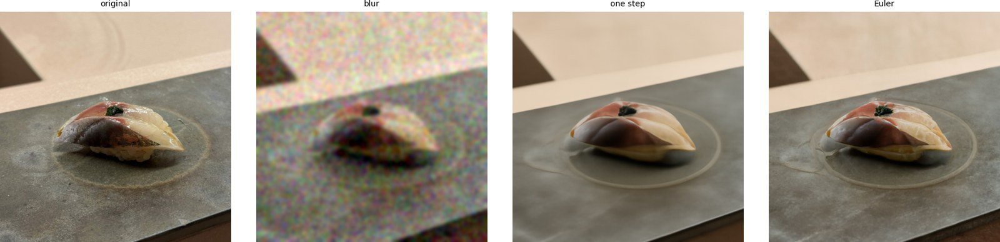
same t = 0.5 input · original · blur · one step · euler
method
mse to original
gaussian blur, σ = 4
0.0100
one step
0.0038
euler, 25 steps
0.0044
Wait, Euler loses to one step?
By eye, Euler is clearly the best: the fish skin has its stripes back, the stone counter has texture and the edges are sharp. Yet its MSE is slightly worse than the one-step estimate. One step returns the average of every clean image that fits the input, and the average is exactly what minimizes squared error, even though it looks blurry. Euler re-checks the image at every step and commits to one particular sharp image. Its details are plausible but not exactly the original’s (it even adds a glass plate under the sushi), and sharp details in slightly wrong places cost more MSE than a blur. So we can see that MSE is misleading: just because an error value is good doesn't mean it is visually good.
1.6
generating images from noise
If we start at t = 0 from pure noise, the same sampler makes an image from scratch: 50 Euler steps with “a high quality photo” as the prompt.
seed 180seed 181seed 182
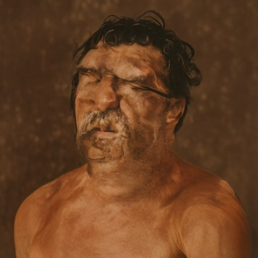
seed 183seed 184
All five are portraits of people. The prompt never mentions a person, so this is a subject bias of the model: to PixNerd, “a high quality photo” apparently means a portrait, likely because lots of training images with captions like that are stock portraits. Quality varies a lot, too. Seeds 182 and 184 are passable, but seed 180’s face is missing and seed 183’s is melted.
2.1
classifier-free guidance
Classifier-free guidance (CFG) asks the model for two velocities at the same xt and t: one with our prompt (vc) and one with the empty prompt “” (vu). The difference between them is “what the prompt adds”, and CFG pushes further in that direction:
With w = 0 this is just the conditional velocity (we checked the two are identical). Below is w = 7, with the same five starting noises as 1.6.
seed 180 · w = 7seed 181 · w = 7
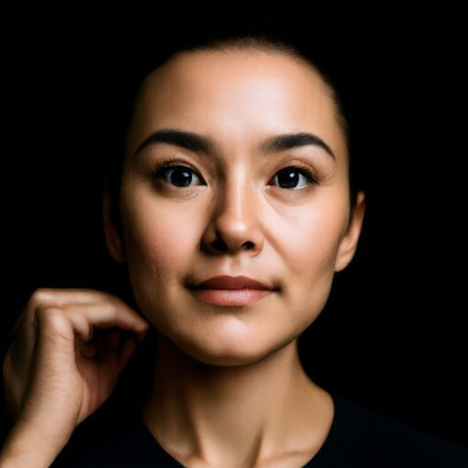
seed 182 · w = 7seed 183 · w = 7seed 184 · w = 7
Every face is now fully formed, sharp and well lit, with more contrast than before. The starting noise still decides the rough layout: seed 182 keeps the hand by the face, and seeds 181 to 183 keep darker backgrounds. The price is variety. All five are front-facing studio headshots on plain backgrounds, as if they came from the same passport photo shoot. Guidance made the model more confident about what “a high quality photo” means, and to this model that is a headshot.
3.1
image-to-image editing
From here on we always sample with CFG (w = 7). To edit an image (SDEdit-style), we noise it to a starting time tstart and let the sampler take it from there. A small tstart means a lot of noise, so the model has a lot of freedom. A large tstart keeps most of the original.
At 0.02 the tower becomes a smooth white column against a blurry sky. Through 0.04 and 0.06 it is a tall white tapered shape, and the trees come back. At 0.10 and 0.14 it is a plain obelisk with a single window at the top. By 0.25 the belfry is back, and at 0.50 even the clock face is there.
our photos: the sushi and a painting
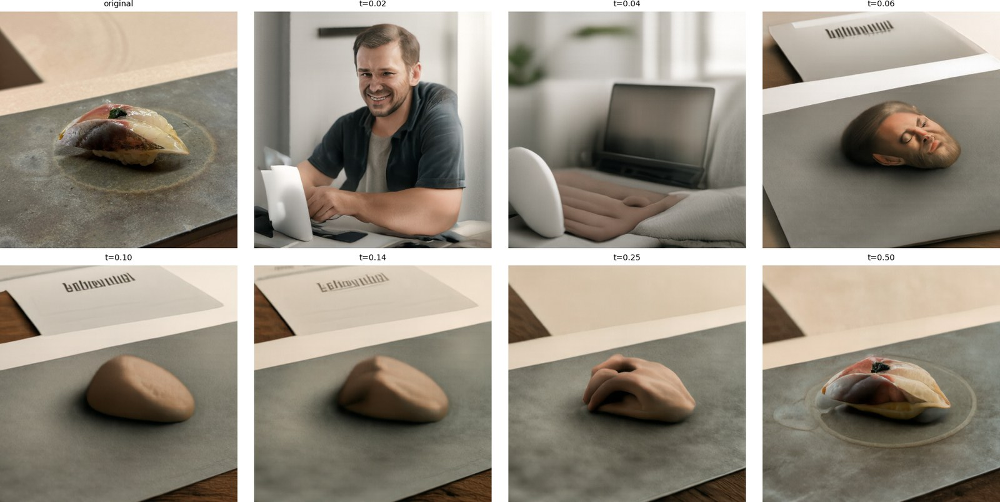
aji nigiri · same starting times
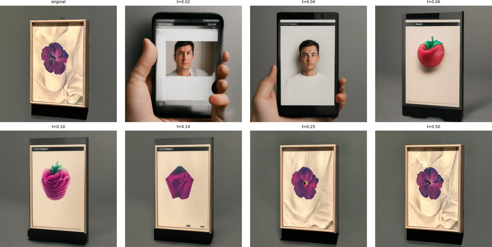
a photo of o’keeffe’s petunia at sfmoma · same starting times
Remember the bias from 1.6? Whenever the model has enough freedom, people show up. The sushi turns into a man smiling at his laptop (0.02), then a laptop and a hand (0.04), then, slightly disturbingly, a man’s head lying on the counter (0.06). At 0.10 and 0.14 it is a smooth stone, at 0.25 a hand resting on the counter, and only at 0.50 does the sushi come back. The painting goes the same way: at 0.02 and 0.04 it is a phone showing a portrait, at 0.06 a tomato on a tablet, at 0.10 a cross between a raspberry and a rose, and at 0.14 a rose. The petunia is back by 0.25. The edits keep the layout long before they keep the subject: the painting stays a tall bright rectangle and the sushi stays a lump in the middle of a gray counter.
a web image: pixel-art ramen
pixel-art ramen from magicoloriage.com · same starting times
When we selected this image, we hoped for real ramen, but the prompt only says “a high quality photo”, and the model’s idea of a high quality photo of a cartoon is… a high quality cartoon. At 0.02 we get a gray bowl, at 0.04 a badge with made-up text on it, and at 0.06 a bowl with two eyes under a block of gibberish letters. The best results are at 0.10 and 0.14: the pixels are gone and the bowl becomes a smooth vector-style sticker, with the same face and toppings. From 0.25 the pixels come back, and at 0.50 even the grid paper and the watermark return.
two drawings: a house and a sunset
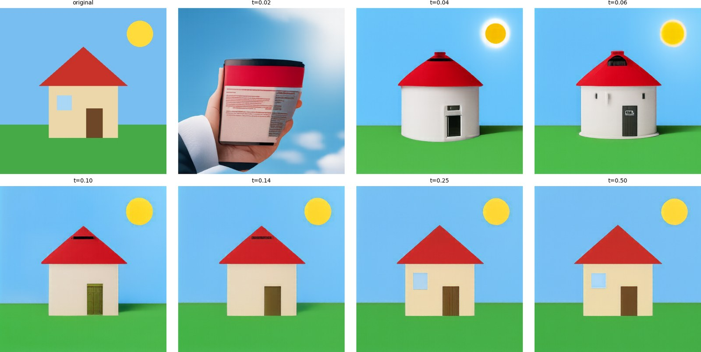
drawing 1 · a house · same starting times
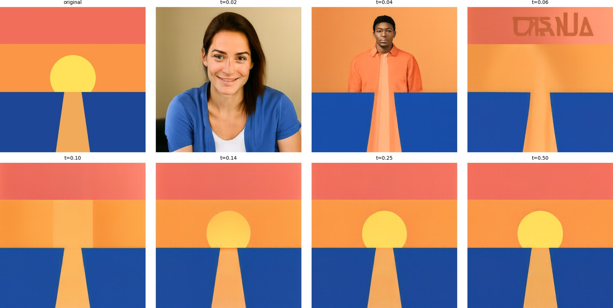
drawing 2 · a sunset · same starting times
The house works best. At 0.02 it is a hand holding a red-labeled can against the sky, but at 0.04 and 0.06 it turns into a round 3D hut with a red roof and a real door, sitting on grass under the sun. That is the most “real” any of our drawings got. From 0.10 onwards it stays the flat drawing, only with a more detailed door. The sunset gets "conditioned" into people again. A smiling woman at 0.02, and at 0.04 a man in an orange shirt whose shirt front is the sun’s reflection on the water. At 0.06 the sun becomes a block of text, at 0.10 it disappears, and from 0.14 the drawing simply comes back unchanged. Our drawings are big flat areas of color with no texture at all, so once there is any signal left, the model treats them as finished and copies them.
Note: the model loves writing gibberish text (the ramen badge, the sunset, the sheets of paper behind the sushi). We think this is because many training images contain text, which the model learned to draw without learning to spell.
3.2
text-guided image editing
Same procedure and starting times, but now we swap “a high quality photo” for a prompt describing the edit we want.
campanile · “a photograph of a white tower in the woods”
From 0.02 to 0.06 the Campanile becomes a white lighthouse (or minaret) in a pine forest, in exactly the same spot and angle. At 0.10 the lighthouse has a balcony and lantern but already the Campanile’s proportions, at 0.14 it has the Campanile’s belfry windows on a smooth white tower, and from 0.25 it is the Campanile again, with pine trees mixed into the trees around it.
sushi · “a photograph of a baguette on a gray table”
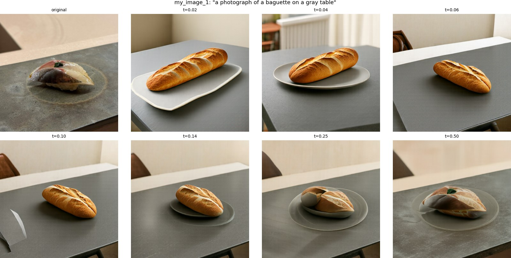
same starting times
Every edit up to 0.14 is a convincing baguette, and from 0.06 on it sits where the sushi was, at the same diagonal. At 0.25 it is a loaf shaped like the sushi on a plate, and at 0.50 we get a sushi-baguette: the nigiri’s shape and nori with a bread crust.
the painting · “a photograph of a framed painting of a cat on a wall”
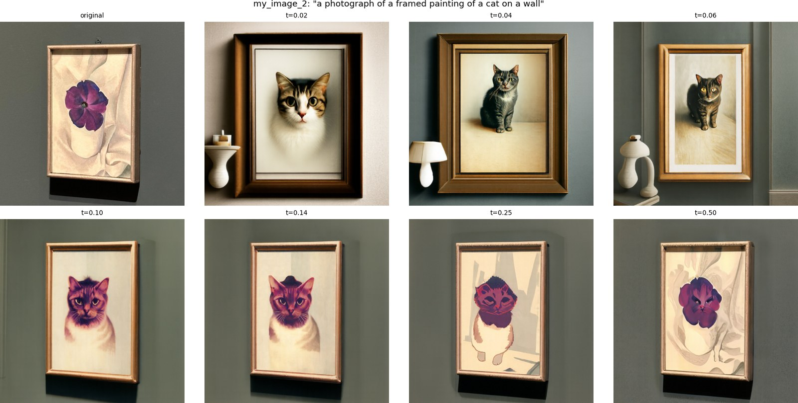
same starting times
Our favorite. From 0.02 to 0.06 we get real cats in new frames: photos rather than paintings, and on different walls. At 0.10 and 0.14 the cat is painted in the petunia’s purples, inside the original frame, hanging at the original angle. At 0.25 the cat and the flower blend, and at 0.50 it is the petunia with a cat face hiding in it. For all three images, 0.10 to 0.14 is the sweet spot: enough noise to change what the subject is, but enough signal left to keep the layout, colors and lighting.
3.3
visual anagrams
A visual anagram is one image that shows one thing upright and another thing upside down. At every Euler step we denoise the image upright with prompt p1, and its 180°-rotated version with prompt p2. Then we rotate the second velocity back and average the two, so both views get denoised at the same time:
We picked pairs whose shapes already match when flipped (a dome and a balloon, a cone and a funnel), and gave both prompts the same style so the brushstrokes agree.
a jellyfish, or a hot air balloon
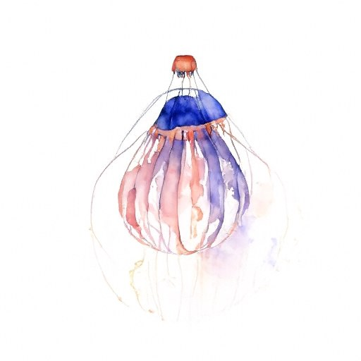
upright · “a watercolor of a jellyfish”upside down · “a watercolor of a hot air balloon”
Upright, a blue bell with pink and purple tentacles trailing down. Upside down, the tentacles become the stripes of the balloon, the bell becomes the balloon’s skirt, and the little orange cap on top of the jellyfish becomes the basket.
a volcano, or a tornado
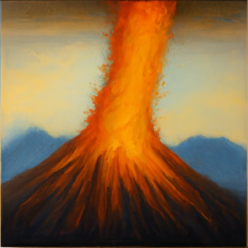
upright · “an oil painting of a volcano erupting”
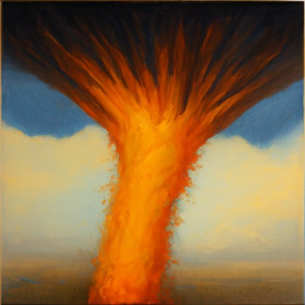
upside down · “an oil painting of a tornado”
Upright, a dark cone shooting a column of lava into the sky. Upside down, the cone becomes the storm cloud and the lava column becomes the funnel. While it is less common for tornados to have fire columns, they do still exist.
3.4
hybrid images
Remember the hybrid images from project 2? There we mixed the low frequencies of one photo with the high frequencies of another. Here we do the same thing to the velocities at every step: the low frequencies come from the far-away prompt and the high frequencies from the close-up prompt. The low pass is a Gaussian blur with σ = 16 (a 265 × 265 kernel at 512 × 512), and the high pass is the velocity minus its blur.
Up close it is a spiral staircase seen from above, every step drawn in pencil. Shrink it and the round stairwell turns into the face of a pocket watch, with the railing at the top becoming its crown and bow.
an owl, or a house
up close · “a photo of a house”
the same hybrid, small
64 × 64 · “a photo of an owl”
Up close it is a lit-up house at night. From far away, the two gables and the glowing windows under them are supposed to be the owl’s ear tufts and eyes, and the bright body of the house against the black background is roughly owl-shaped.
part b · flow matching from scratch
a unet trained on mnist · one h100
1.1
implementing the unet
Every model in Part B is the same small UNet. It shrinks the 28 × 28 digit to 14 × 14, then 7 × 7, then a single 1 × 1 vector, and grows it back the same way. At every resolution, a skip connection concatenates the features from the way down with the features on the way up, so the fine detail doesn’t have to squeeze through the 1 × 1 bottleneck. D is the number of hidden channels.
x1 = self.conv_in(x) # D x 28 x 28
x2 = self.down1(x1) # D x 14 x 14
x3 = self.down2(x2) # 2D x 7 x 7
u = self.unflatten(self.flatten(x3)) # 2D x 1 x 1 -> 2D x 7 x 7
u = self.up1(torch.cat([x3, u], 1)) # concat to 4D, then D x 14 x 14
u = self.up2(torch.cat([x2, u], 1)) # concat to 2D, then D x 28 x 28
return self.conv_out(torch.cat([x1, u], 1)) # concat to 2D, convblock, conv2d to 1 channel
1.2
using the unet to train a denoiser
Our first task is to train a plain denoiser. Given a noisy digit z = x + σε, predict the clean digit x, trained with an L2 loss. MNIST pixels are in [0, 1].
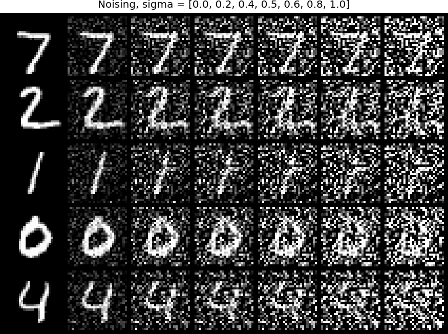
rows: five test digits · columns: σ = 0, 0.2, 0.4, 0.5, 0.6, 0.8, 1.0 · same noise, scaled
At σ = 0.5 the digits are still easy for us to read. By σ = 1.0 the noise is as bright as the strokes themselves.
1.2.1 · training at σ = 0.5
D = 128, batch size 256, Adam with a learning rate of 1e-4, 5 epochs (1175 steps). We apply fresh noise for every batch. This ensures that the network never sees the same noisy digit twice.
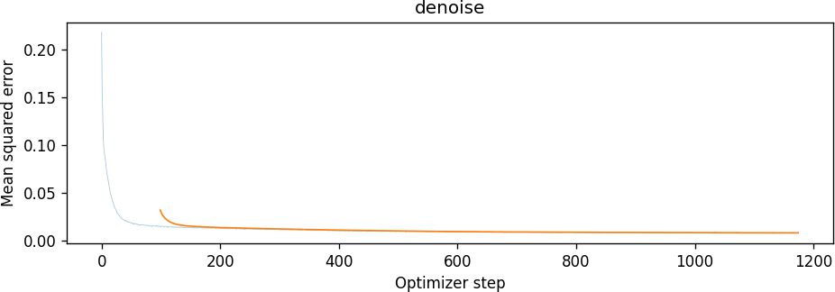
training loss · every step, with a 100-step moving average
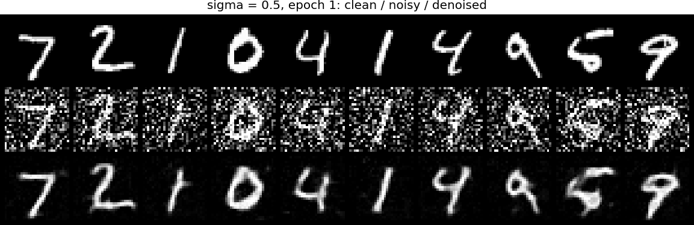
after epoch 1 · rows: clean · noisy · denoised
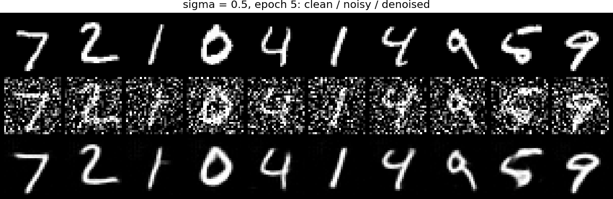
after epoch 5 · same digits, same noise
The loss drops from 0.22 to about 0.01 in the first hundred steps and then slowly creeps down. After a single epoch every digit is already readable, but the strokes are soft and some leftover blotches remain (look at the 5, second from the right). After five epochs the strokes are cleaner and more even. The leftover blob inside the 5 is still there, though. That’s fair, because the noisy 5 really is ambiguous.
The model was only trained on σ = 0.5, but less noise is no problem: from σ = 0 to 0.6 we get a clean 7 back (at σ = 0 it just returns the input, slightly thicker). More noise is a problem. At σ = 0.8 the 7 picks up an extra stroke and starts to look like a Z, and at σ = 1.0 blotches of noise survive around it. The model learned to remove noise of one particular strength, and any extra noise gets interpreted as part of the digit.
1.2.3 · denoising pure noise
Same setup, but now the input is pure noise z = ε, which has nothing to do with the target digit.
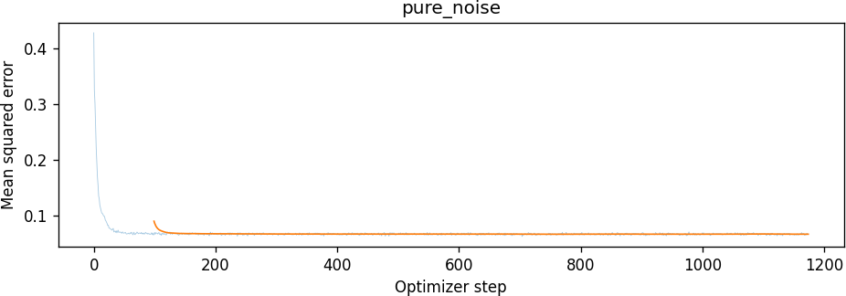
training loss · pure noise in, digit out
after epoch 1 · rows: input · output
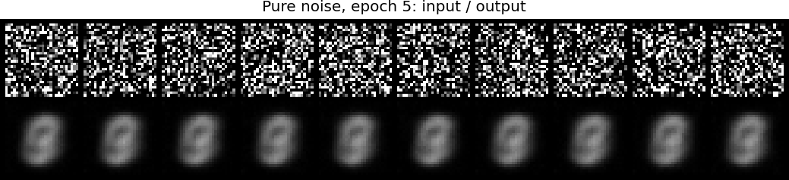
after epoch 5 · same inputs
the mean of all 60,000 training digits
Every input gives the same blurry blob, a 0, a 3 and an 8 drawn on top of each other, and it doesn’t change from epoch 1 to 5. The input tells the model nothing about the target, so under MSE the best it can do is predict the centroid: the average of all training digits (compare it to the mean digit above). The loss flattens out at about 0.067, the average squared distance of an MNIST digit from the mean digit (0.0673).
2.1
adding time conditioning to the unet
One step can’t generate digits, so just like in Part A we generate by following a flow. The noisy input is xt = (1 − t) x0 + t x1 with x0 ~ N(0, I), and the UNet learns to predict the flow u = x1 − x0. Note that the network now predicts a velocity, not the clean image.
The UNet now also needs to know t. An FCBlock (Linear · GELU · Linear) embeds the scalar t into a vector, and that vector scales the features at two points: the 2D-channel output of Unflatten and the D-channel output of the first UpBlock. We reuse the unconditional UNet’s layers as they are and only add the two FCBlocks:
t = t.reshape(-1, 1) # (N, 1), already in [0, 1]
x1 = net.conv_in(x)
x2 = net.down1(x1)
x3 = net.down2(x2)
u = net.unflatten(net.flatten(x3)) * unsqueeze(self.fc1_t(t), 2) # fc1_t: 1 -> 2D
u = net.up1(torch.cat([x3, u], 1)) * unsqueeze(self.fc2_t(t), 2) # fc2_t: 1 -> D
u = net.up2(torch.cat([x2, u], 1))
return net.conv_out(torch.cat([x1, u], 1))
unsqueeze(·, 2) turns the (N, C) embedding into (N, C, 1, 1), so it broadcasts over every pixel.
2.2
training the time-conditioned unet
For every batch we draw a random t and fresh noise per image, build xt, and regress the flow (Algorithm B.1):
D = 64, batch size 64, Adam starting at 1e-2, and an exponential scheduler with γ = 0.11/10 stepped after every epoch, so the learning rate decays from 1e-2 to 1e-3 over the 10 epochs (9380 steps).
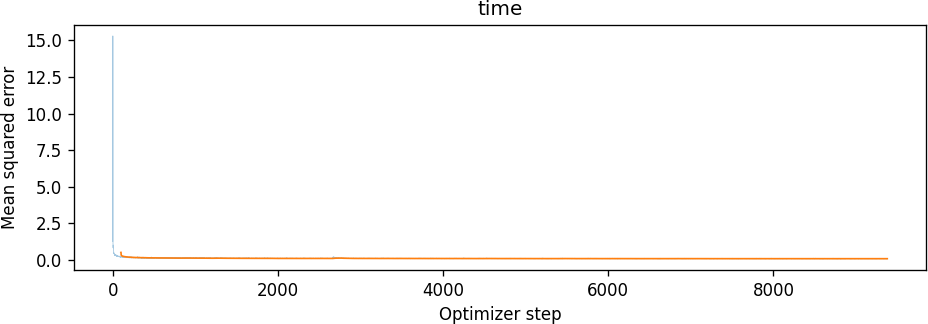
training loss · time-conditioned unet
The first few steps spike to a loss of about 15: a learning rate of 1e-2 is a big kick for a freshly initialized network. It quickly drops back below 1, and the rest of the curve is squashed flat by that spike. To get actual numbers, we re-evaluated the saved checkpoints on 40 training batches: 0.134 after epoch 1, 0.106 after epoch 5 and 0.093 after epoch 10. Unlike the denoiser, this loss can never reach zero. Near t = 0 the input is almost pure noise, so many different digits fit it equally well, and the model can only predict their average flow.
2.3
sampling from the time-conditioned unet
Sampling is Euler integration from pure noise (Algorithm B.2), here with 50 steps. All three grids start from the same 40 noise images.
x = torch.randn(40, 1, 28, 28)
for i in range(num_ts):
t = torch.full((len(x),), i / num_ts)
x = x + unet(x, t) / num_ts
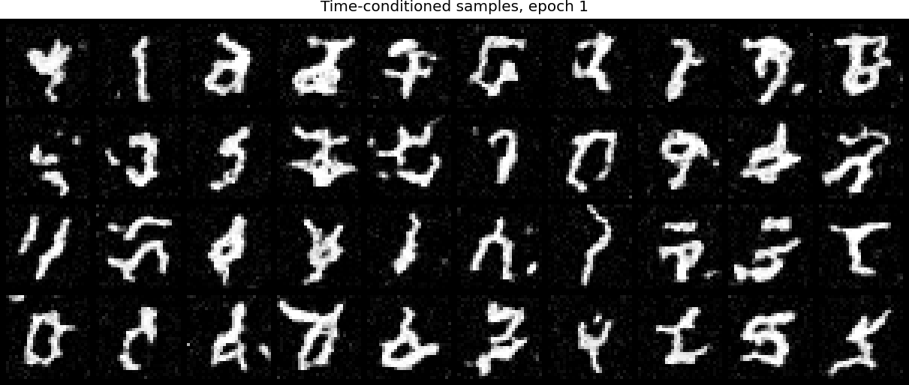
after epoch 1
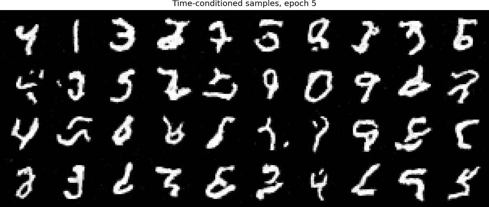
after epoch 5
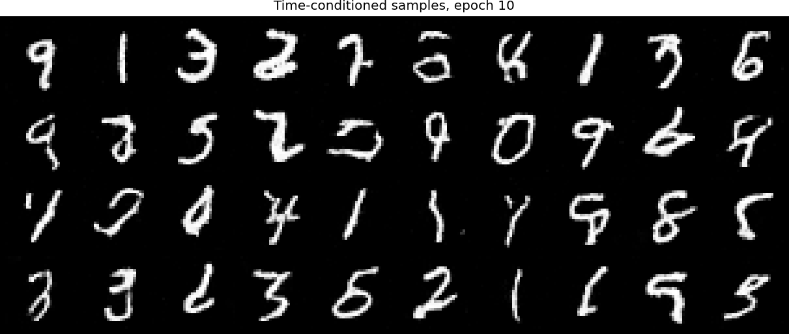
after epoch 10
After one epoch we get handwriting-like squiggles that are mostly not digits. After five, many are legible (1s, 3s, a 5, a 0, some 9s), with plenty of mangled ones still in between. After ten, most samples are digits, but there are still several shapes that aren’t quite anything. Because each slot keeps its starting noise, you can watch the same sample sharpen across the three grids, e.g. the 1 in the second column or the 3 in the third. The model has to decide on a digit purely from the noise, and sometimes it never really decides.
2.4
adding class conditioning to the unet
To tell the model which digit to draw, we feed in the class as a one-hot vector c through two more FCBlocks. The class embeddings scale the features and the time embeddings shift them:
c = F.one_hot(c, self.num_classes).float()
if mask is not None:
c = c * mask[:, None] # zero vector = “no class”
...
u = unsqueeze(self.fc1_c(c), 2) * u + unsqueeze(self.fc1_t(t), 2) # unflatten = c1 * unflatten + t1
u = net.up1(torch.cat([x3, u], 1))
u = unsqueeze(self.fc2_c(c), 2) * u + unsqueeze(self.fc2_t(t), 2) # up1 = c2 * up1 + t2
We also want the same model to work without a class, so that we can do classifier-free guidance like in Part A. During training, 10% of the time (puncond = 0.1) we replace c with the zero vector:
Same hyperparameters as 2.2 (D = 64, batch size 64, Adam from 1e-2 with the exponential scheduler, 10 epochs), now with the labels (Algorithm B.3).
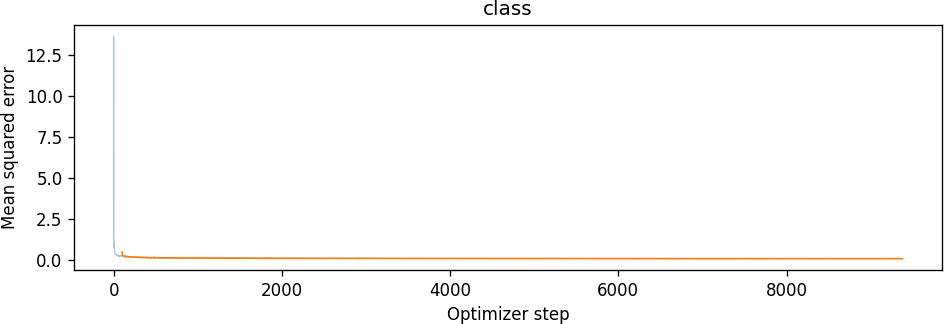
training loss · class-conditioned unet, with scheduler
The same spike at the start (about 13.6), and the same flat tail. Re-evaluating the checkpoints gives 0.120, 0.092 and 0.084 after epochs 1, 5 and 10, lower than the time-only model (0.093 at epoch 10). Knowing which digit it’s looking at removes a lot of the uncertainty near t = 0.
2.6
sampling from the class-conditioned unet
Sampling uses classifier-free guidance with γ = 5 and 300 Euler steps (Algorithm B.4). Careful: Part B writes guidance as uuncond + γ(ucond − uuncond), which is not Part A’s form. γ = 5 here is w = 4 in Part A’s notation.
for i in range(num_ts):
t = torch.full((len(c),), i / num_ts)
u_uncond = unet(x, c, t, no_class) # mask of zeros
u_cond = unet(x, c, t)
x = x + (u_uncond + guidance_scale * (u_cond - u_uncond)) / num_ts
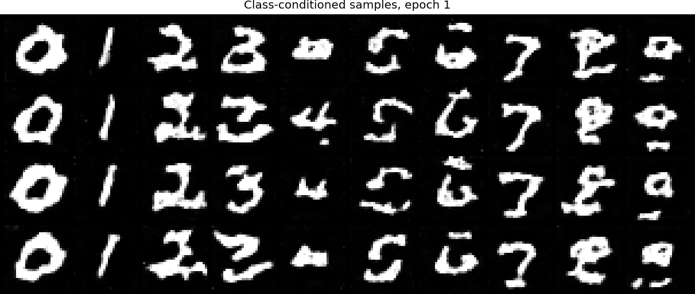
after epoch 1 · columns: digits 0–9 · four samples each
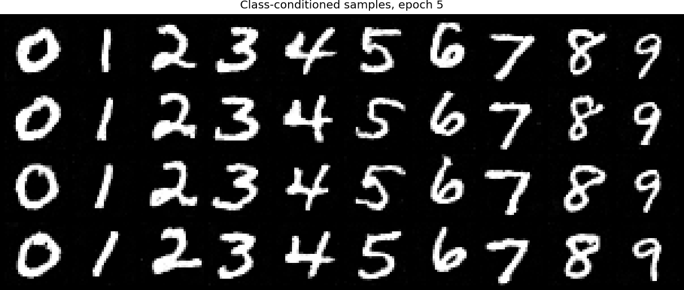
after epoch 5
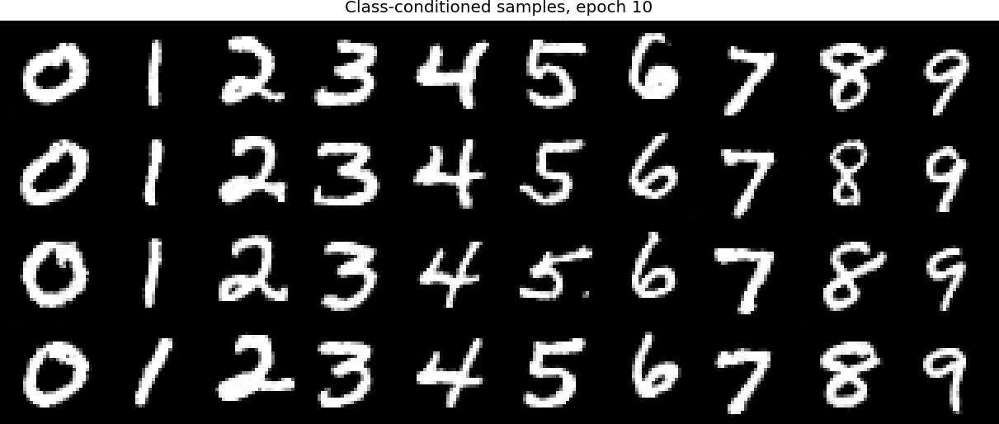
after epoch 10
What a difference a label makes. After one epoch every column is already the right digit, just blobby (the 4s and 9s are mush). After five epochs all 40 are clean, and after ten they are a little smoother still, with a couple of quirks like a 5 with a stray dot. Each digit also comes in different styles: slanted and upright 1s, 2s with and without a loop.
getting rid of the scheduler
What is the scheduler actually doing for us? It starts the learning rate high (1e-2) to make fast progress and ends it low (1e-3) so that the weights settle down instead of bouncing around. If we remove the scheduler, we keep 1e-2 all the way, and the end of training would keep bouncing. To compensate, we train with a constant learning rate of 1e-3.
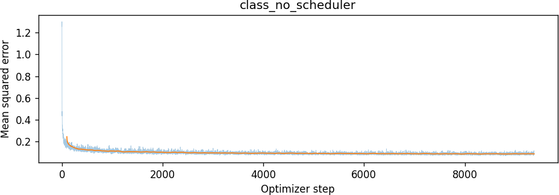
training loss · no scheduler, constant lr 1e-3
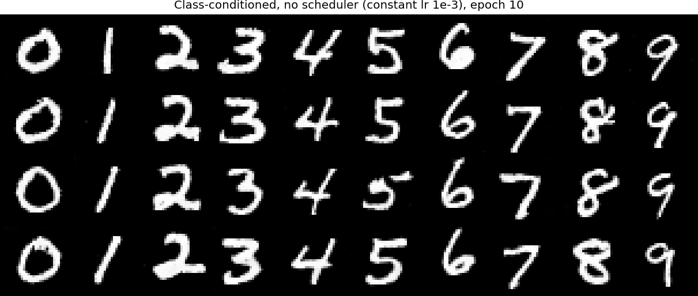
after epoch 10 · no scheduler
training loss
epoch 1
epoch 5
epoch 10
scheduler, 1e-2 → 1e-3
0.120
0.092
0.084
no scheduler, constant 1e-3
0.109
0.090
0.085
The two are essentially tied. After 10 epochs the losses differ by 0.001 and the samples results are visually nearly identical. For a model this small and only trained for 10 epochs of MNIST, 1e-3 is a good enough hyperparameter value, so the scheduler will not offer non-trivial advantages. In this case, simplicity wins.